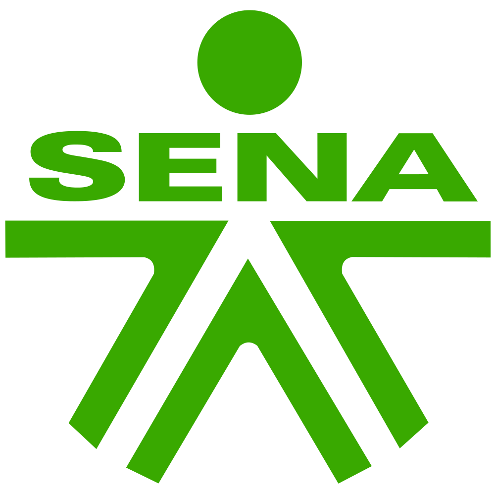

Coordinación
Seguimiento de tareas, tiempos y recursos.
Ingeniero mecánico
Experiencia en coordinación de proyectos, seguimiento de actividades y organización de información.
Formado en la Universidad de Córdoba. Me interesan la ingeniería aplicada y las herramientas que ayudan a trabajar con mayor orden.
Montería, Córdoba · Colombia

Me gradué de Ingeniería Mecánica en la Universidad de Córdoba en 2024. Luego trabajé como coordinador de proyectos en Hamilton Colombia, donde hice seguimiento a tareas, tiempos y recursos, apoyé a los equipos y preparé informes.
También me interesa la parte tecnológica: registrar información, revisar avances y presentar datos de forma comprensible.
Seguimiento de tareas, tiempos y recursos.
Consolidación de datos e informes de avance.
Formación técnica y proyectos académicos.
Un proyecto universitario de ingeniería y algunas muestras de interfaces, modelos y visualización de información.
Propuesta universitaria de un sistema de agitación para biorreactor con energía solar. El póster reúne el esquema de funcionamiento, los componentes y una representación del equipo.
Vista de balance diario para consultar y comparar movimientos por periodo.
Diagrama de relaciones entre tablas para organizar información.
Recursos visuales para consultar información y reconocer tendencias.
Coordinación de actividades, organización de equipos y seguimiento a la ejecución de proyectos.
Montería, Córdoba
Estudios universitarios y formación complementaria en energía, datos, herramientas técnicas y comunicación.

Universidad de Córdoba
Montería, ColombiaDiplomado · Universidad de Córdoba
Bootcamp · Universidad Tecnológica de Bolívar

SENA
AutoCAD 2D, Introducción a la Industria 4.0, comunicación laboral, comunicación asertiva y English Does Work – Level 6.
Español nativo Inglés B1 (según CV)
Puedes escribirme si quieres conocer mejor mi experiencia o tienes una oportunidad profesional.
Enviar un correo